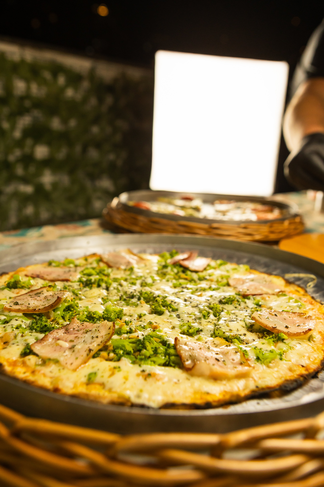
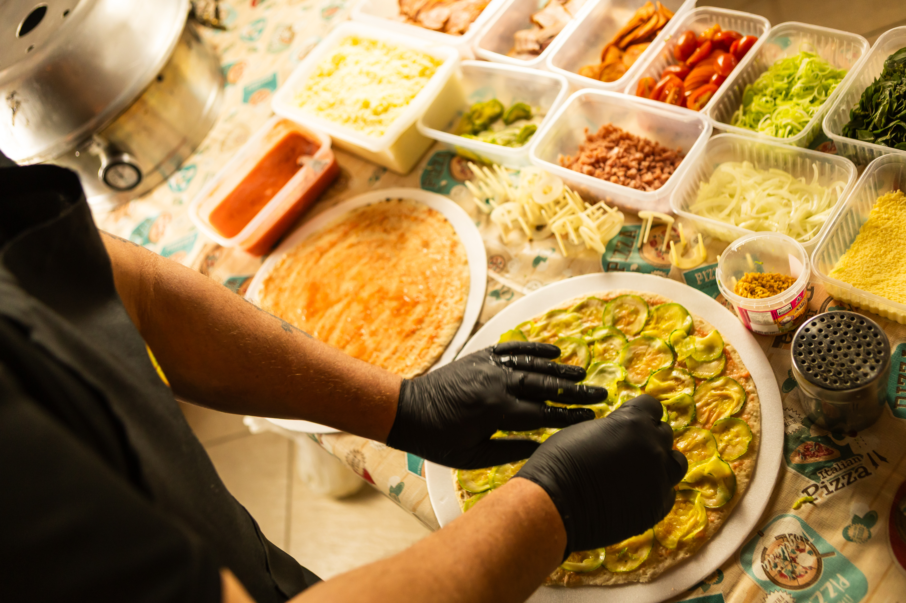
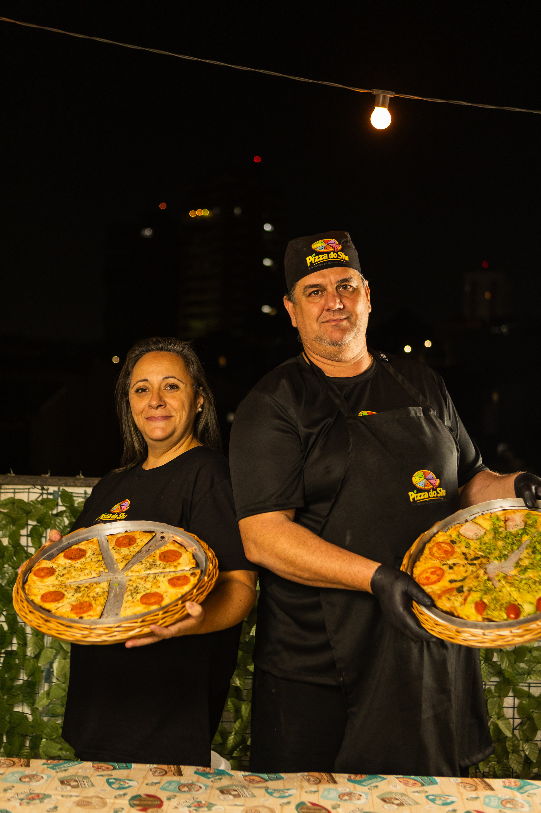
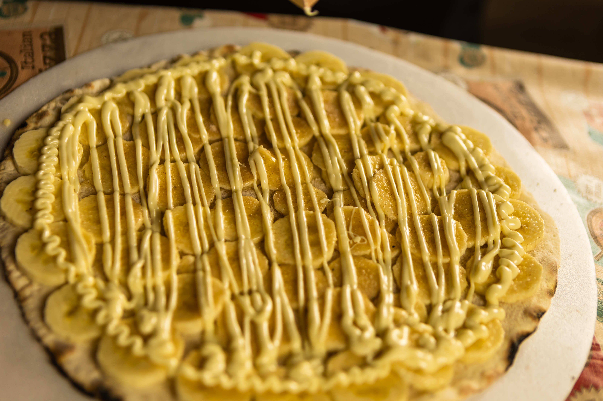
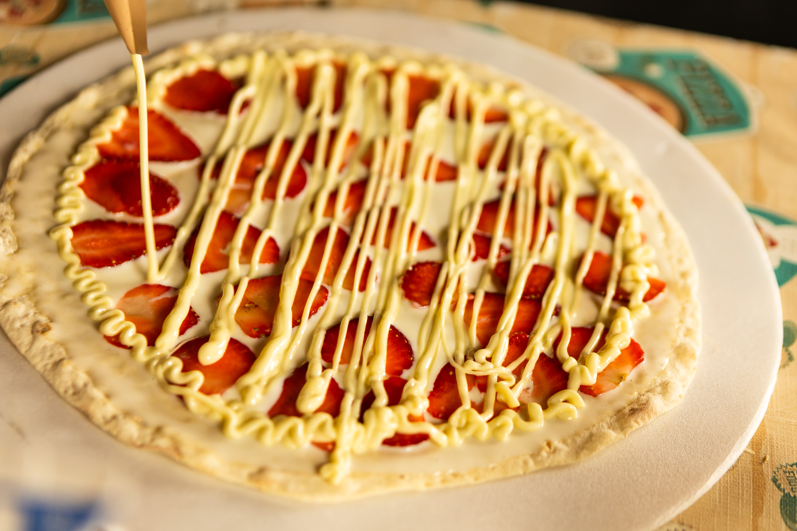
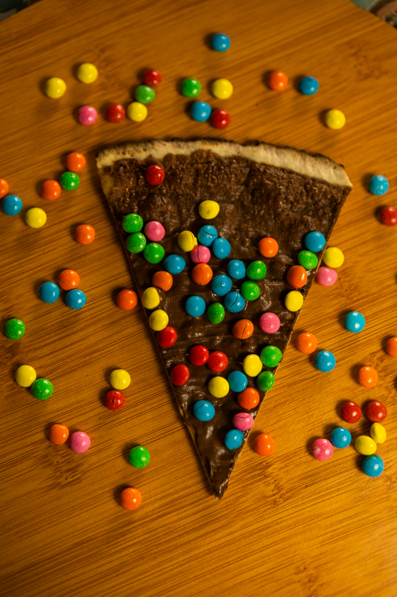
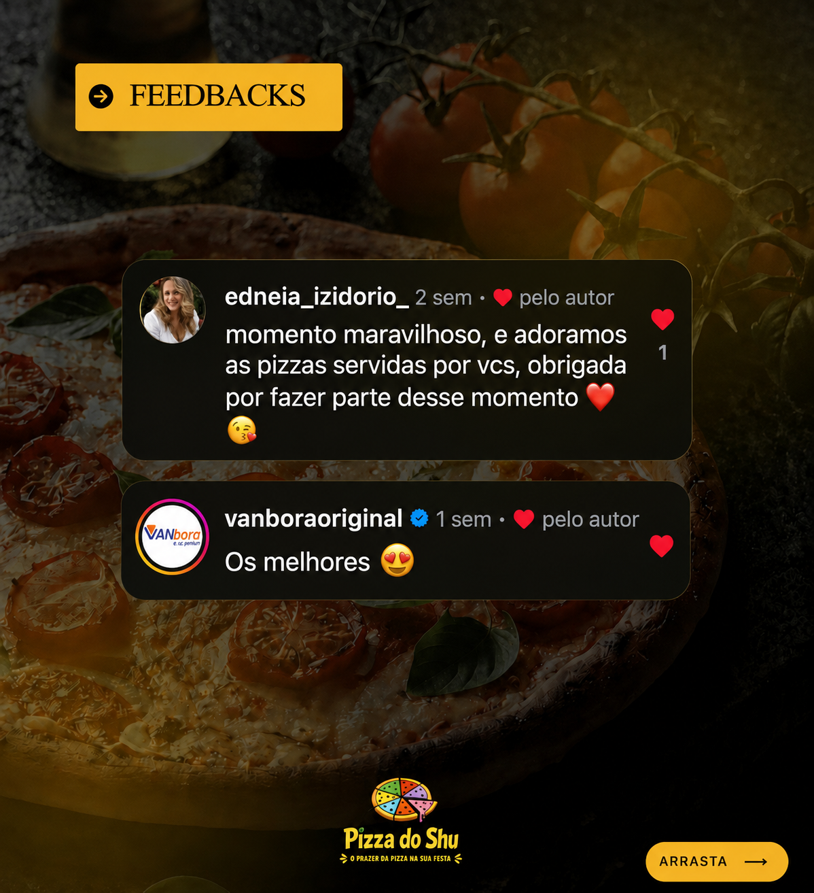
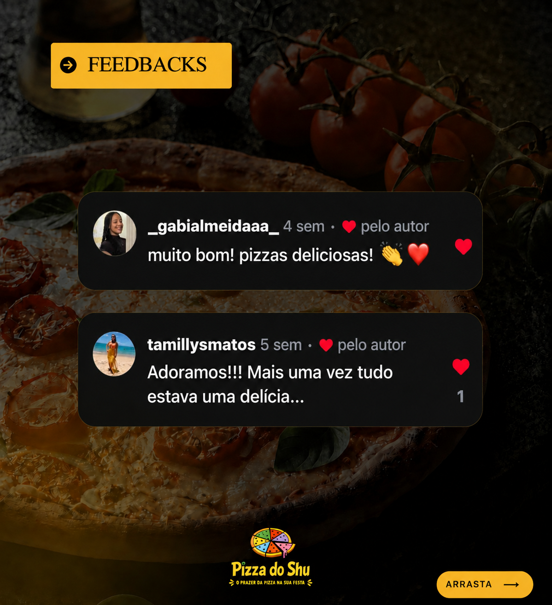

Buffet de pizzas para festas e eventos
O prazer da Pizza do Shu na sua festa.
Uma experiência completa, com pizzas preparadas na hora, muito sabor e um buffet especial para você e seus convidados.
Quero meu orçamento →Como funciona
Você aproveita a festa.
Nós cuidamos da pizza.
01
Conte sobre seu evento
Fale com a gente e solicite seu orçamento.
02
Levamos o buffet
Preparamos a estrutura para o seu evento.
03
Pizza na hora
Seus convidados aproveitam pizzas fresquinhas.

Uma experiência de verdade
Pizza feita na hora, para deixar sua festa ainda melhor.
Levamos sabor, variedade e uma experiência especial para aniversários, confraternizações e eventos.
Falar no WhatsApp →Fotos reais
Veja a Pizza do Shu em ação.





Atendimento
Todas as regiões de São Paulo.
Conte pra gente sobre seu evento e leve a experiência da Pizza do Shu para a sua festa.
Solicitar orçamento →Avaliações reais
Quem já viveu essa experiência, recomenda.
Alguns feedbacks reais compartilhados por nossos clientes.


Seu evento merece
Leve a Pizza do Shu para sua festa.
Fale conosco pelo WhatsApp e solicite seu orçamento.
Falar com a Pizza do Shu →